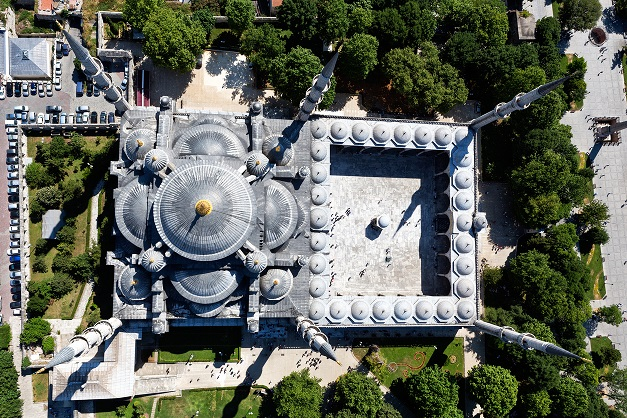
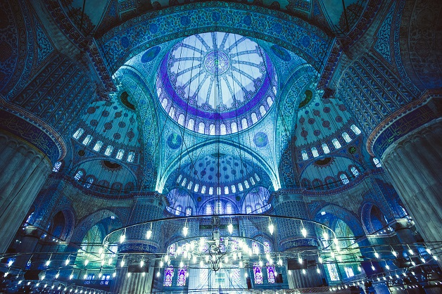
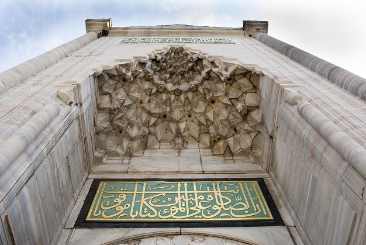

Sultanahmet Camii
Açıklamaİstanbul’a aşık olmamız için Ayasofya’nın manzarası bile yeterliyken onun hemen yanında yer alan, asırlardır saygıyla baktığımız ve her gidişimizde hayran olduğumuz Sultan Ahmet Camii, aşkımızı bambaşka bir boyuta taşımayı başarıyor. Sultan Ahmet Camii; hikayesi, mimari özellikleri, konumu ve tarihe meydan okumasıyla tarihi yarımadanın en çok ziyaret edilen eserlerinden biri. İç duvarlarını süsleyen muhteşem desenlerin renginden dolayı yurt dışında ve yabancı turistler arasında “Blue Mosque” (Mavi Cami) adıyla da anılıyor burası. Türk İslam mimarisinde geçmiş yıllarda fark yaratan ve özellikleriyle bu farkı hala sürdüren İstanbul’un muhteşem ayrıntısı Sultan Ahmet Camii’ni yakından inceleyelim. Yaygın görüşün aksine Sultan Ahmet Camii’nin mimarı Mimar Sinan değil, fakat onun güzelliğine ilham olduğu da bir gerçek. Caminin mimarı, Mimar Sinan’ın yetiştirdiği öğrencilerden biri olan Sedefkar Mehmet Ağa. Sultan Birinci Ahmet tarafından 17. yüzyılda yaptırılan cami, 1609-1616 yılları arasında inşa edilmiş. Manevi yanının güçlü olması ile bilinen genç padişah 1. Ahmet tarafından yapılması için çok çaba harcanan caminin temelini de padişah atmış. 1. Ahmet’in temel atma sırasında kullandığı kazma, günümüzde Topkapı Sarayı’nda sergileniyor. Sultan Ahmet Camii hakkında bilgi verirken belki de en başta kendisinin Osmanlı sınırları içindeki ilk ve tek 6 minareli cami olduğunu söylemekle başlamalıydık. Çünkü bu ayrıntı, Sultan Ahmet Camii’nin hikayesini ve onu diğer eserlerden ayıran en önemli özelliklerden birini oluşturuyor. Aslında bu durum camiye ihtişam kattıysa da en başta çok eleştirilmiş, çünkü o zamana kadar dünya üzerindeki tek 6 minareli cami Kabe’deymiş. Bu durumun kutsal mekâna saygısızlık olduğu söylentilerine duyarsız kalamayan padişah, Kâbe’ye 7. minareyi dikerek olayı çözmüş. Sultanahmet Camii minareleri, geleneksel İslam mimarisine de farklı soluk getirmiş. İslam coğrafyasındaki sade minarelere rağmen bu caminin minaresinde bulunan süslemeler dikkat çekiyor. Görkemli Bir Detay: Cami Avlusu Sultan Ahmet Camii hakkında bilgi verirken caminin diğer dış özelliklerini de atlamamak gerek. Sultanahmet Camii’nin tasarımı, Osmanlı cami mimarisi ile Bizans kilise mimarisinin sentezi olarak yorumlanıyor. Caminin, hemen yanındaki Ayasofya’dan esinlendiğini görebiliriz. Mimari özelliklerinin tamamen heybet ve ihtişamla özetlendiği bu caminin avlusu da cami kadar geniş. Avlunun batı girişinde, demirden yapılan ağır kordon bulunuyor. Bu kordonun, avluya atıyla giren padişahın kafasını çarpmamak için eğilmesi ve padişahın bile camiye girerken kendisine çeki düzen vermesi gerektiğini göstermek amacıyla yapıldığını söyleyen tarihçiler bulunuyor.  Sultan Ahmet Camii’nin iç kısmı, büyük bir emeğin sonucunda hayat bulmuş. Bunu bir örnekle açıklamaya çalışalım: Caminin süslemeleri, İznik’te 50 farklı lale desenine sahip 20 binden fazla çiniden oluşuyor. İznik’teki çiniciler tarafından yapılan bu muhteşem çinilerin üzerinde çiçekler, meyveler ve serviler bulunuyor. Tüm bu çiniler de masmavi, huzurlu ve ihtişamlı bir sahneyi meydana getiriyor. Turistlerin buraya Blue Mosque demesi çok normal, çünkü mavi renk burada oldukça yoğun. Camiinin mimarisinde bulunan detaylar çok güçlü. Mesela Sultan Ahmet Camii’nin kubbe ve tavan işlemeleri oldukça önemli. Öyle önemli ki 1985 yılında İstanbul Tarihî Alanları (Zones historiques d’Istanbul) adıyla UNESCO Dünya Miras Listesi’ne eklenen bir parça kendisi. Bunun dışında burada hat sanatının en nadide örnekleri de dikkat çekiyor. Ayrıca özenle oluşturulmuş iç mekânın çeşitli yerlerine, örümceklenmeyi önlemek için devekuşu yumurtası yerleştirilmiş. Caminin içindeki en önemli unsurlardan biri de ince işçilikle oyulmuş ve yontulmuş mermerden yapılma mihrap. Etrafı pencerelerle çevrelenmiş mihrabın ihtişamının yanında, iç mekânın akustiğindeki kusursuzluk da camiinin en kalabalık olduğu zamanlarda bile imamın sesinin kolayca duyulmasını sağlıyor. Öyle ki bu özellik hala mimarlar tarafından takdirle karşılanıyor. Sultanahmet Camii Hakkında İlginç Bilgiler 
* Caminin mimarı Mimar Sinan değil, onun en iyi öğrencilerinden Sedefkar Mehmet Ağa. |
|
Açılış tarihi: 1616 Yapım başlangıç tarihi: 1609 Kapasite: 10.000 Mimarlar: Mimar Sinan, Sedefkâr Mehmed Ağa |
|
|
Adres: Sultan Ahmet, Atmeydanı Cd. No:7, 34122 Fatih/İstanbul |
|
|
Kapalı Günler Yok |